Original OSM geometry, original schematic artwork. This pass establishes geography and gameplay; façades, traffic details and facilities remain approximate. Read the implementation and limitations report.
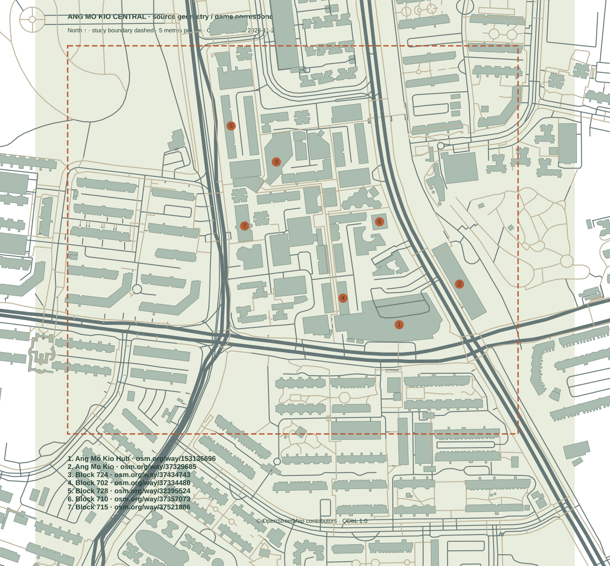
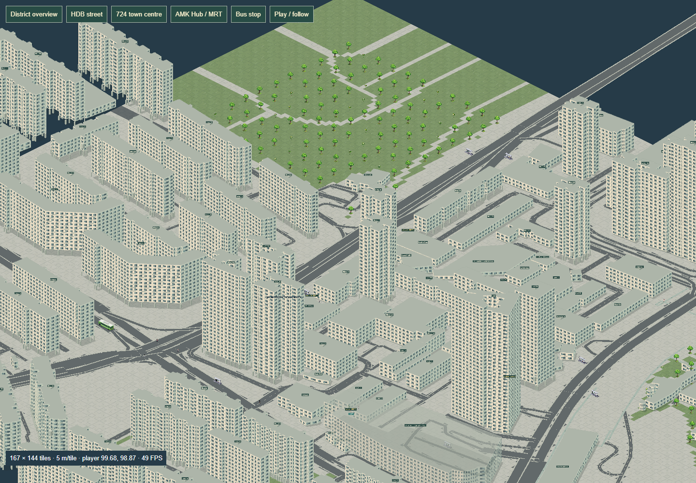
| Reference landmark | WGS84 reference point | Game tiles | Source way |
|---|---|---|---|
| 1. Ang Mo Kio Hub | 1.369321, 103.848523 | 122.92, 103.46 | OSM 153136696 |
| 2. Ang Mo Kio | 1.370002, 103.849527 | 145.28, 88.42 | OSM 37329685 |
| 3. Block 724 | 1.372052, 103.846477 | 77.39, 43.09 | OSM 37434743 |
| 4. Block 702 | 1.369766, 103.847588 | 102.11, 93.64 | OSM 37334480 |
| 5. Block 728 | 1.372656, 103.845724 | 60.63, 29.72 | OSM 32395524 |
| 6. Block 710 | 1.371048, 103.848195 | 115.63, 65.27 | OSM 37357073 |
| 7. Block 715 | 1.370978, 103.845949 | 65.63, 66.84 | OSM 37521886 |
Reference points are vertex means for correspondence, not surveyed entrance coordinates.
Both captures use 1440×1000, centre (0,1700), zoom 0.24. The old district is much smaller; the new capture shows part of the expanded district. The development comparison uses the frozen old map with the current renderer, rather than claiming to reproduce an old executable.
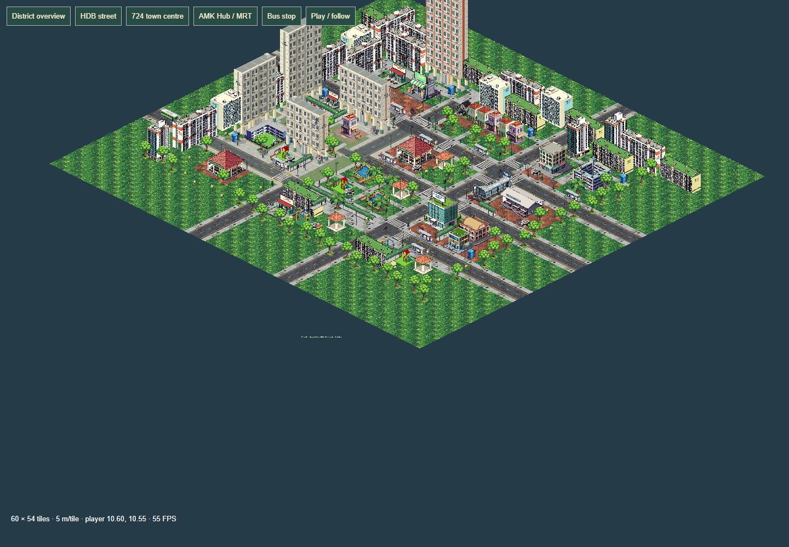
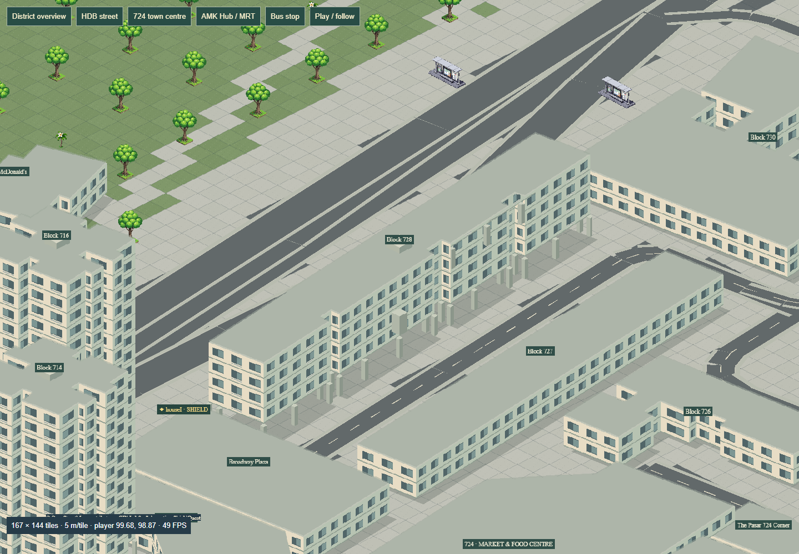
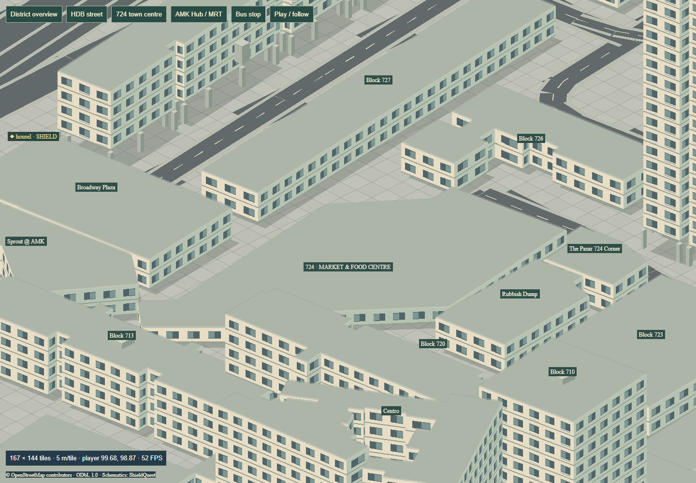
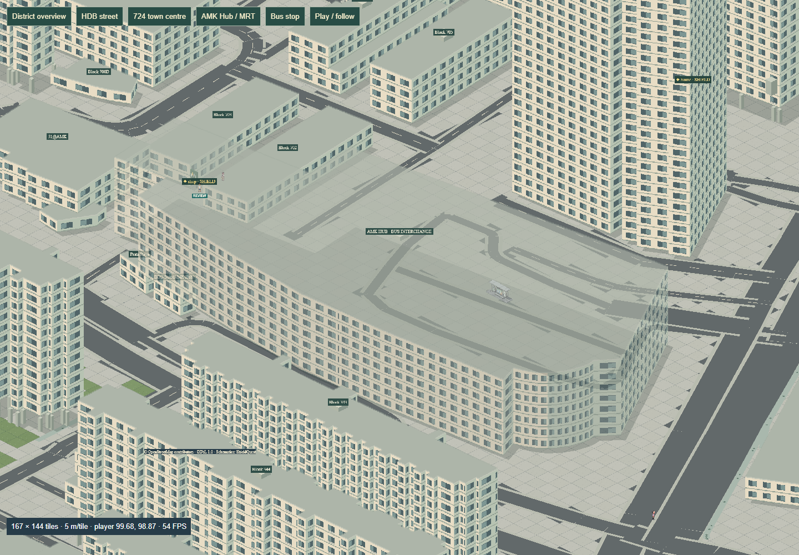
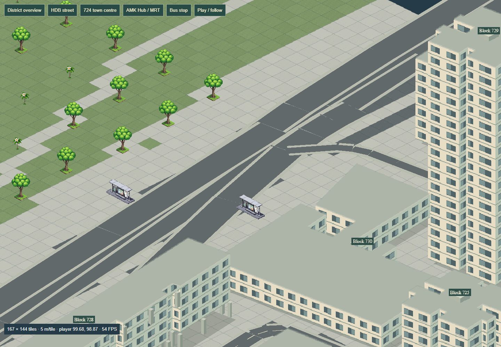
Arrow-key input moves the Phaser actor; exact positions and browser checks are in browser-checks.json.
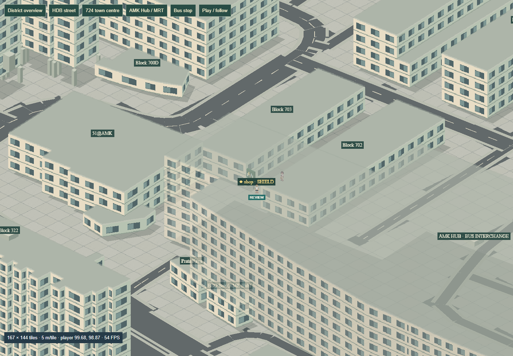
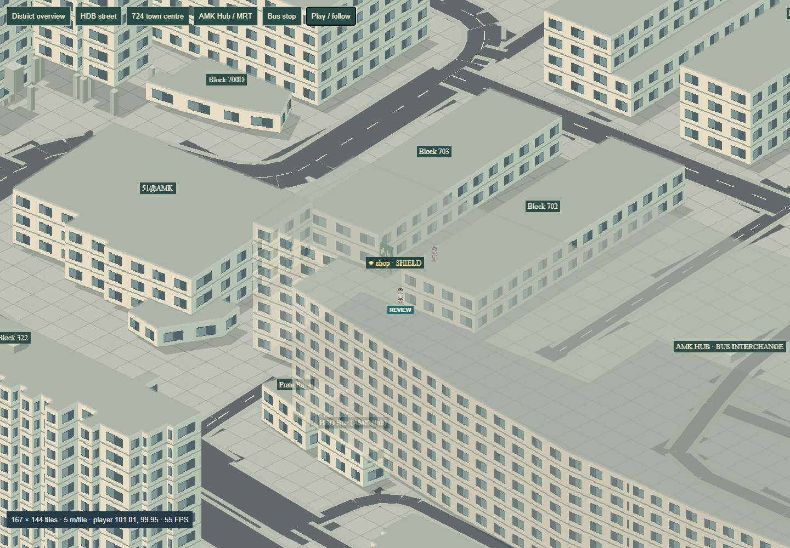
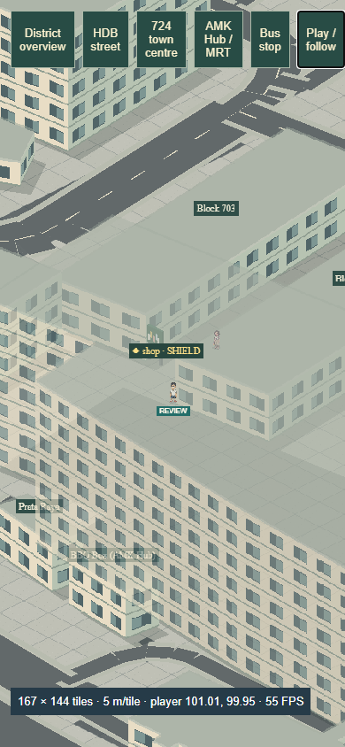
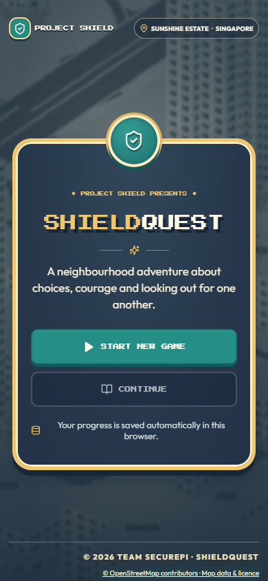